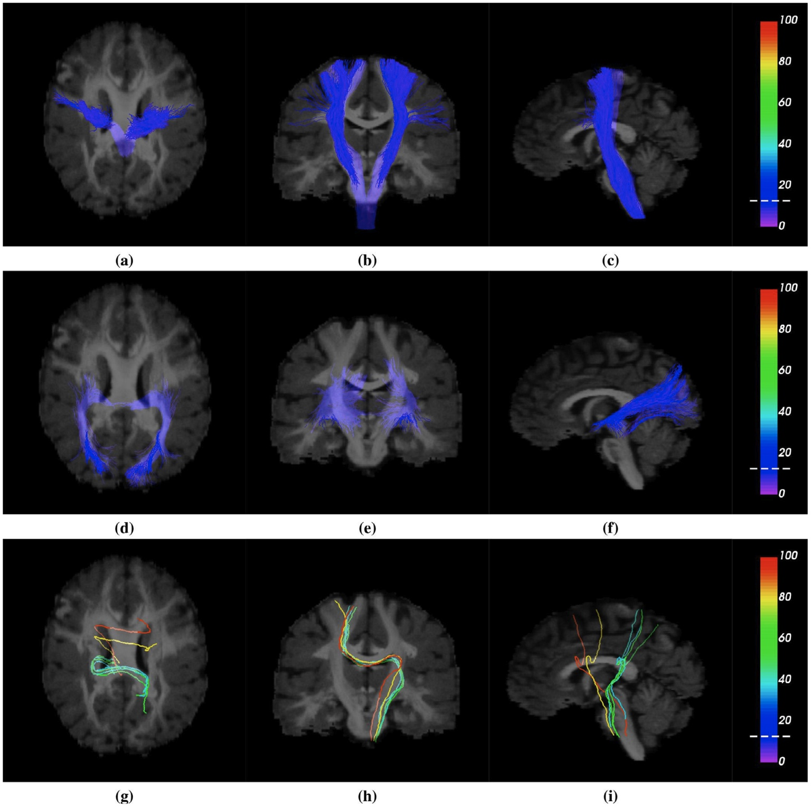

01
Filter
FINTA – Filtering in Tractography using Autoencoders
FINTA learns a latent representation from raw, unlabelled tractograms and filters implausible streamlines using a nearest-neighbour procedure in the learned representation space.

FINTA, Fig. 9. Streamline classification predictions corresponding to some cases of the ISMRM 2015 Tractography Challenge dataset test set: (a), (b), (c) corticospinal tract (CST); (d), (e), (f) optic radiation (OR); (g), (h), (i) example corresponding to implausible streamlines. All axial superior, coronal anterior and sagittal left views. Streamlines are color-coded according to their nearest neighbor distance in the latent space. The dashed white lines on the scale bars mark the filtering threshold. The streamlines corresponding to the implausible class are shown with a larger diameter with respect to the one used for the rest of the figures.